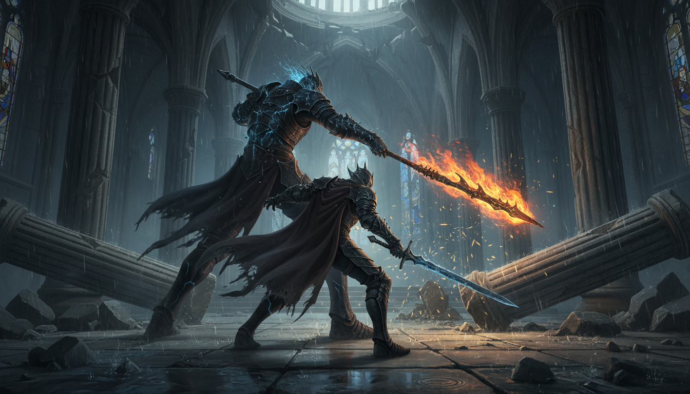

Sobre mí
Mi nombre es Guillermo de Jesus Luna Sanchez, tengo 42 años y soy originario Cordoba
Veracruz, actualmente estudio la carrera de ingeniería en sistemas computacionales.
Desde los 6 años descubrí mi pasión por los videojuegos, una afición que con el tiempo se
convirtió en parte fundamental de mi vida y en mi mayor refugio creativo.
Para mí, un Soulslike no es solo un juego difícil; es una lección de vida.
Representa ese ciclo eterno de caer y levantarse, donde cada derrota es un aprendizaje y
la victoria solo llega para aquellos que tienen la paciencia de observar y la voluntad de no rendirse.
¿Por qué crear este blog?
Decidí crear este blog como un espacio para compartir mi pasión por el género Soulslike,
analizar su diseño de niveles, su narrativa ambiental y las mecánicas que han definido una era.
Además, este proyecto forma parte de mi formación en Desarrollo de Aplicaciones
en Red, donde aplico conocimientos de HTML y CSS para construir un sitio web
desde cero.
Mi objetivo es combinar tecnología y mi amor por los desafíos virtuales, creando un espacio donde
otros "No Muertos" y "Latentes" puedan encontrar información interesante y bien organizada sobre sus mundos favoritos.
